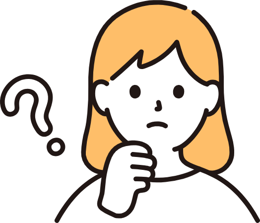
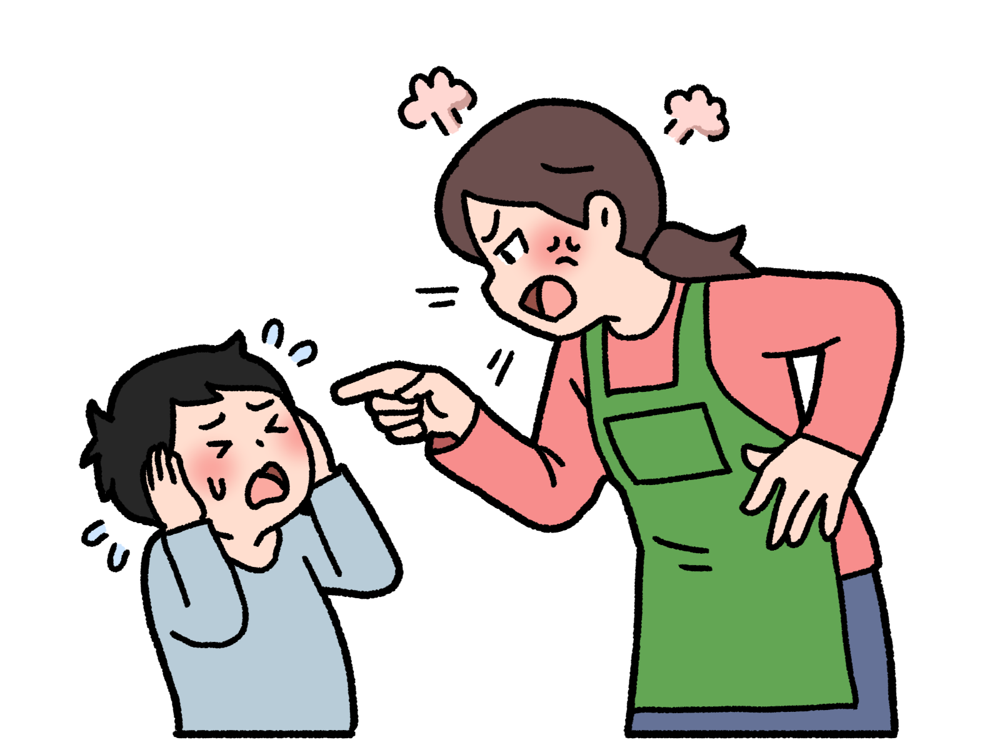
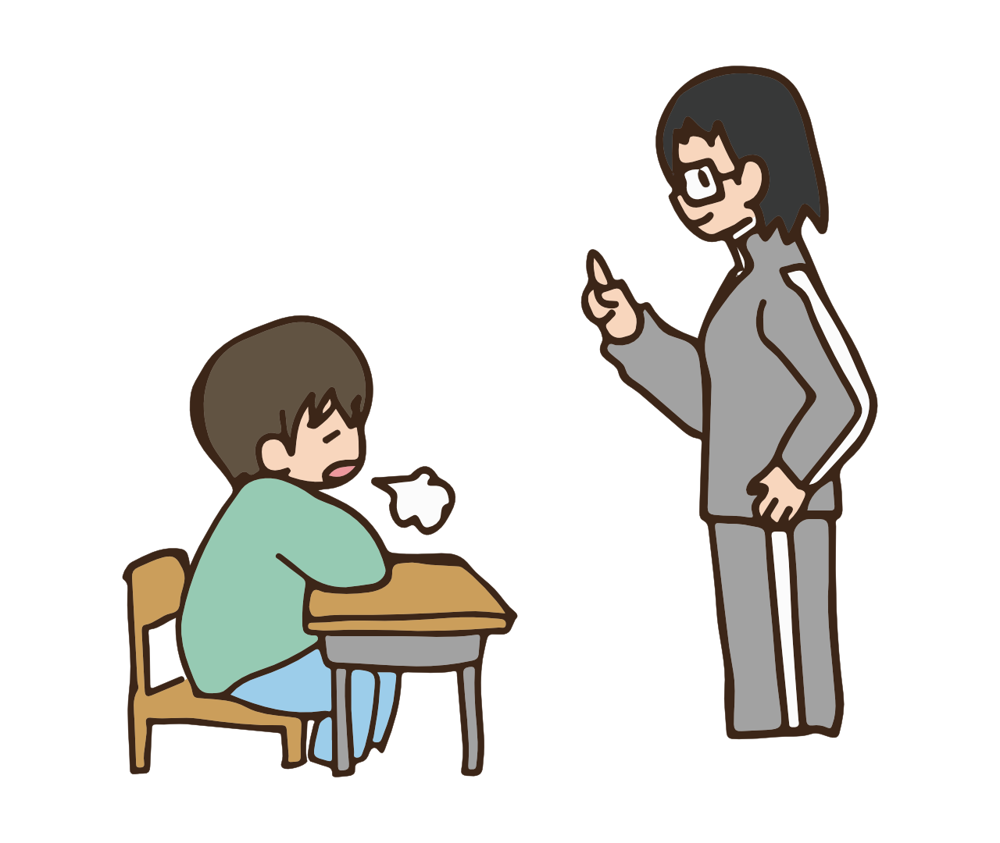
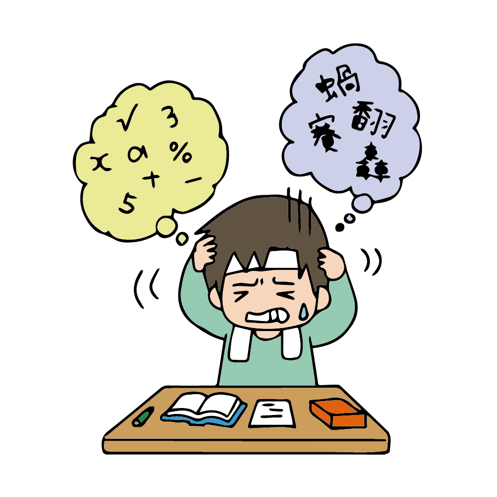
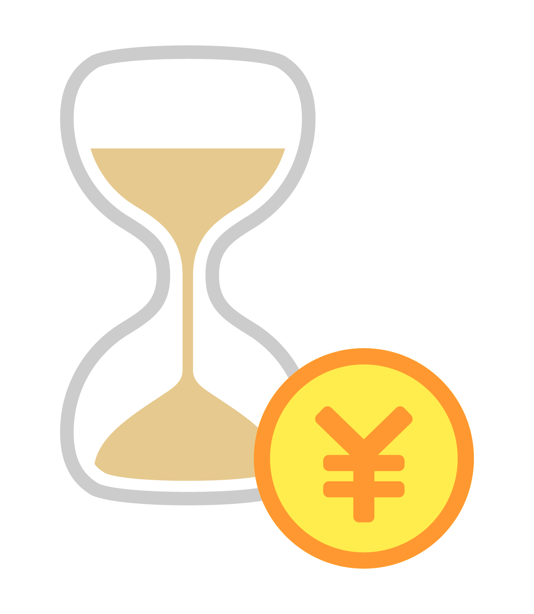
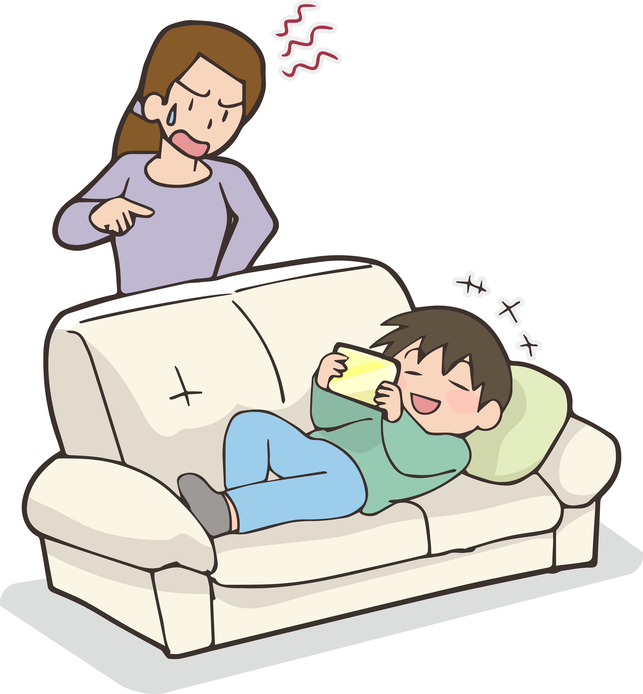
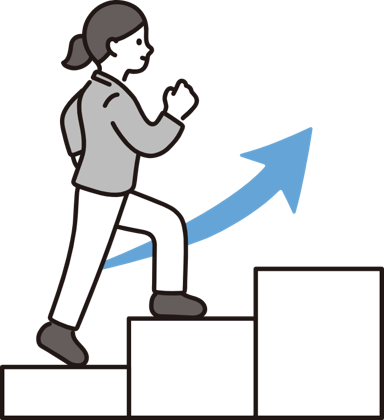

授業と自学の役割
私の指導では、
- 授業本質理解を身につける
- 自学それを使う練習をする
という役割分担をしています。
本質理解×自学設計で、学力の岩盤を育てるオンライン個別指導
Problem
こうした悩みには、本質理解と自学設計が効果的です。
Cause

勉強量が足りないから？
本人のやる気がないから？
実は、成績が伸びない原因は「勉強量」ではありません。
勉強しているのに伸びない。 授業も受けているのに解けない。 その原因は、やる気や努力不足ではなく、 「分かったつもり」で進んでしまっていることにあります。
答えを出すことはできても、 なぜその解き方を使うのか、なぜその公式が成り立つのかを説明できない状態です。
たとえば、「この問題はこの解き方」「この形ならこの公式」「似た問題だから同じ手順」 のように、問題の見た目や覚えた手順で解こうとしていると、 単元同士のつながりが見えにくくなります。
本当に理解している状態とは、答えを出せることだけではなく、 なぜその考え方を使うのかを自分の言葉で説明できる状態です。
でも定期テストは点数が良いけど
簡単な問題は解けるから基礎は大丈夫
そう思っている方ほど要注意です。次の項目に2つ以上当てはまる方は、「分かったつもり」が積み重なっているサインです。
「分かったつもり」の状態を放置すると、学年が上がるごとに、 暗記でカバーした知識が増えていきます。 その結果、単元ごとのつながりを理解することが難しくなり、 また暗記でカバーに頼ってしまいます。 そして、勉強量は増えているのに成果が出にくい状態になってしまうのです。
学年が上がるほど、
そして…
苦手な子が陥りがちなのが苦手のスパイラルです。 暗記で乗り切ると、単元同士のつながりがさらに見えにくくなり、 学年が上がるごとにまるですべてを丸暗記しないといけないような状況になってしまいます。
まずは、どこで「分かったつもり」になっているのかを見つけること。 そして必要なところまで戻り、「なぜそうなるのか」まで理解し直すこと。 単元同士のつながりを理解しながら知識の土台を固めることで、 暗記に頼る苦手科目のスパイラルから抜け出せます。 これこそが、すべての問題を考える上で重要な基礎、本質理解です。
本質理解とは、どんな問題にも共通する考え方の土台です。 他の単元とのつながりを意識して「なぜそうなるのか」まで理解し、 最小限の知識で様々な課題を解決できる状態のことです。 そのため、基礎はただ易しい問題を解けることではありません。
この問題はこの解き方
なぜその式を使うのか
この形ならこの公式
どうして成り立つのか
問題の見た目で判断する
他の単元とつながりはないか
新しい単元は“追加”ではなく“つながる”ものです。 前に学んだ知識と結びつけて理解できるようになると、毎回ゼロから暗記する必要がなくなります。

もっと家で勉強しなさい
やる気を出しなさい
自分で勉強していない様子を見ると、ついこういったことを言いたくなってしまいます。 しかし、このようなことを言っても根本的な解決には至らず、お子様も保護者の方も、どちらも疲弊してしまいます。 なぜなら、原因の本質はやる気以外の別のことにあるからです。
本質理解がない状態では、
・何を考えればいいか分からない
・どう解けばいいか分からない
ため、一人で勉強が進まなくなります。
「分かったつもり」のまま進むと、一人で考えて進めることが難しくなり、学習が塾や授業回数に依存しやすくなります。

塾でしか勉強できない
授業回数が増える
時間と費用が増える
塾をやめると勉強が止まるつまり問題は、
「自分で勉強しないこと」ではなく
「自分で勉強できる状態になっていないこと」
です。
必要なのは、
です。
私の指導では、
という役割分担をしています。
本質理解がある状態では、同じ問題でも
1時間 → 20分
で解けるようになります。
その結果、
という状態になります。
Solution
手が止まる場面や間違え方を見ながら、どこで理解が抜けているのかを確認します。 今の単元だけでなく、必要に応じて前の単元まで戻ります。
基礎とは、簡単な問題のことではありません。 どんな問題にも共通する「考え方の土台」です。 公式や解き方を丸暗記するのではなく、なぜその式を使うのか、どう判断するのかまで理解します。
授業で理解した考え方を、宿題や演習で実際に使ってもらいます。 次の授業で、どこまで自力でできたか、どこでつまずいたかを確認し、足りない理解を補います。
問題を解けるようにする
理解の仕方を変える
Voice
保護者の声
生徒の声
掲載内容はイメージです。実際の声は、掲載許可をいただいたものを匿名で掲載予定です。
Strengths
生徒がまだ理解していない知識を前提に説明しても、本当の理解にはつながりません。 一人ひとりの理解度に合わせて、説明の順番や言葉を変えながら、今ある知識から理解できるように指導します。

02手が止まる場面や間違え方を見ながら、どの知識が抜けているのかを確認します。 必要に応じて前の単元まで戻り、暗記でごまかさずに理解し直します。
授業中に説明を聞いて分かることと、一人で解けることは違います。 生徒自身が問題を読んで方針を立て、自力で解けるかまで確認します。
個別指導塾での指導経験を含め、これまで累計100人以上の生徒を指導してきました。 苦手克服から定期テスト対策まで、一人ひとりに合わせた指導を行ってきました。
授業では、タブレットを使って図や式をリアルタイムで書きながら説明します。 途中式や考え方を画面上で一緒に確認できるため、オンラインでも理解しやすい授業が可能です。
個人指導のため、体験授業から継続指導まで同じ講師が担当します。 毎回同じ講師が見ることで、苦手な単元や理解度の変化を継続的に把握できます。
Subjects

英語・数学を中心に、学校の授業フォロー、定期テスト対策、苦手単元の復習に対応します。

定期テスト対策や高校受験に向けた基礎固めに対応します。

英語・数学の基礎固め、学校授業の補習、苦手分野の復習に対応します。
Price
基礎定着プラン｜英語・数学
英語または数学を週1回、じっくり基礎から復習したい方向けです。
テスト前サポートプラン｜理科・社会
定期テスト前に、理科・社会をピンポイントで復習したい方向けのサポートです。
今日のテーマ
方程式の文章題を、式にする練習基本はオンラインでの個別指導です。近隣で通える場合は、対面授業もご相談いただけます。
教材は塾用教材を中心にこちらで用意します。教材準備費は授業料に含まれます。
入会金や設備維持費はかかりません。月末締め・翌月初めの銀行振込を基本としています。
理科・社会サポートは中学生対象です。テスト範囲に合わせて重要事項を短時間で整理します。
Trial Lesson
申し込みはGoogleフォームから簡単にできます。 体験後に必ず継続する必要はありませんので、まずは授業の雰囲気や進め方をご確認ください。
 1
1
お申し込みはかんたんです。Googleフォームに、お名前・学年・希望科目などを入力するだけで完了します。 苦手な単元がはっきり分からない場合も、「相談して決めたい」で大丈夫です。
 2
2
内容を確認し、こちらからご連絡します。
 3
3
ご都合のよい日時を相談して決めます。
 1
1
学年・科目・苦手単元・テスト範囲などを確認します。
 2
2
苦手単元に合わせて、実際の授業に近い形でミニ授業を行います。
 3
3
どこでつまずいているか、今後どう学習するとよいかをお伝えします。
体験後に、ご家庭で検討してから決めていただけます。
準備するものは、Zoomが使える端末と筆記用具です。
テスト結果や学校ワークがあれば、より具体的に状況を確認できます。
体験授業後、継続をご希望の場合のみ通常授業についてご案内します。無理な勧誘はありません。
Googleフォームで申し込むBefore / After
Before
After
今後、体験授業を受けた方へのインタビューを匿名で掲載予定です。
FAQ
授業では、タブレットを使って図や式をリアルタイムで書きながら説明します。画面上で途中式や考え方を一緒に確認できるため、オンラインでも分かりやすく進めることができます。生徒さん自身にも考え方や解き方を確認しながら進めるため、「聞いて終わり」にならないようにしています。
大丈夫です。今の単元が分からない場合でも、必要に応じて前の単元まで戻って確認します。基礎とは、簡単な問題だけを繰り返すことではなく、どんな問題にも必要になる考え方の土台です。つまずいている部分を一つずつ確認しながら、自分で解ける状態を目指します。
約60分の体験授業では、最初に現在の学習状況や困っていることを簡単に確認し、その後、実際に問題を解きながら授業を行います。苦手な単元がはっきりしている場合はその内容を扱い、特に決まっていない場合は学校のワークや最近のテスト、現在習っている単元などをもとに相談して決められます。
はい、問題ありません。保護者の方が、お子さまの苦手単元を正確に把握していなくても大丈夫です。フォームでは「相談して決めたい」を選んでいただければ、体験授業前後に学習状況を確認しながら、扱う内容を一緒に決めます。
フォーム送信後、原則1〜2日以内にご連絡します。その後、体験授業の日程や扱う内容を相談して決めます。
いいえ。体験授業後に、授業の進め方や相性を見てからご判断いただけます。継続をご希望の場合のみ、通常授業についてご案内します。無理な勧誘はありません。
入会金・設備費・退会時の違約金はありません。基本的にお支払いいただくのは、実施した授業分の授業料のみです。追加費用が発生する場合は、事前に必ずご相談します。後から知らない費用を請求することはありません。
はい。長期契約ではないため、継続が難しくなった場合はご相談いただけます。退会時の違約金はありません。月ごとの継続相談を基本としているため、初めての方でも安心して始めやすい形にしています。
主に中学生を対象に、数学・英語を中心に指導しています。中1・中2の基礎固め、中3の定期テスト対策や高校受験に向けた基礎固めに対応します。高校生は英語・数学の基礎補習を中心に、内容を確認したうえで対応します。理科・社会は中学生のテスト前サポートとして相談可能です。
基本的にはこちらで用意した塾用教材を使って進めます。学校のワーク、教科書、プリント、定期テスト範囲表などは、必要に応じてサブ教材として活用できます。
生徒さんの状況に合わせて、必要な範囲で宿題を出します。ただ量を増やすのではなく、授業で扱った内容を自分で解けるようにするための復習や演習を中心にします。最終的には、先生がいない時間にも自分で学習を進められる状態を目指します。
必要に応じて、授業後の簡単な共有や、保護者の方との相談時間を設けることもできます。現在の学習状況、目標、今後の進め方などについて、ご希望に応じて確認します。
Story
はじめまして。筑波大学大学院生の講師です。 これまで中高生を中心に学習サポートを行う中で、「わかったつもり」のまま進んでしまうことが、英語・数学の苦手につながりやすいと感じてきました。
だからこそ、答えだけを教えるのではなく、どこで止まったのかを一緒に探し、基礎から理解を積み上げる指導を大切にしています。
Contact
無料体験後に、無理に入会を勧めることはありません。 授業の雰囲気や進め方を確認したうえで、ご家庭でゆっくりご検討ください。